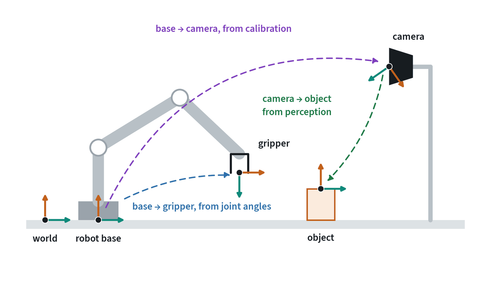
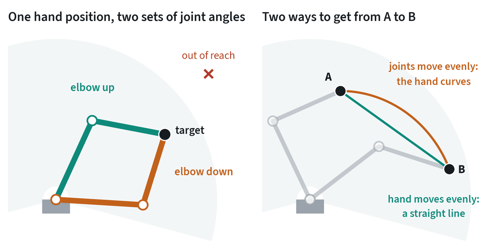
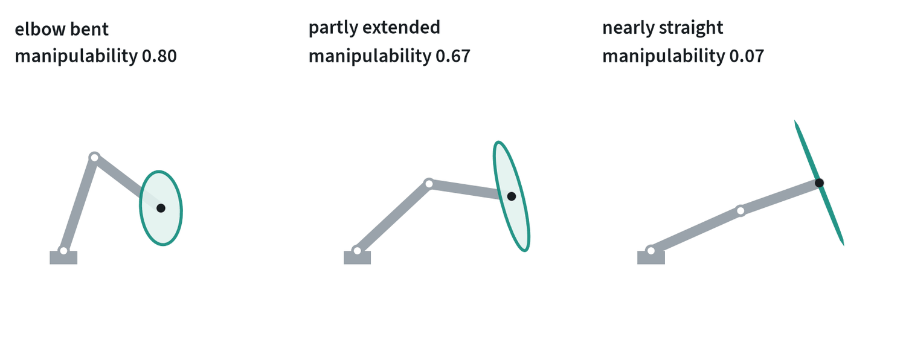
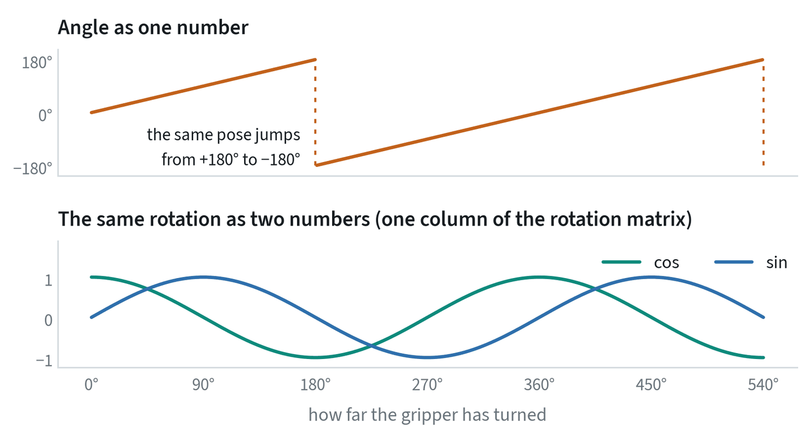
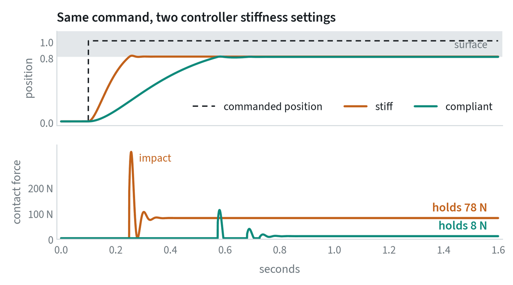
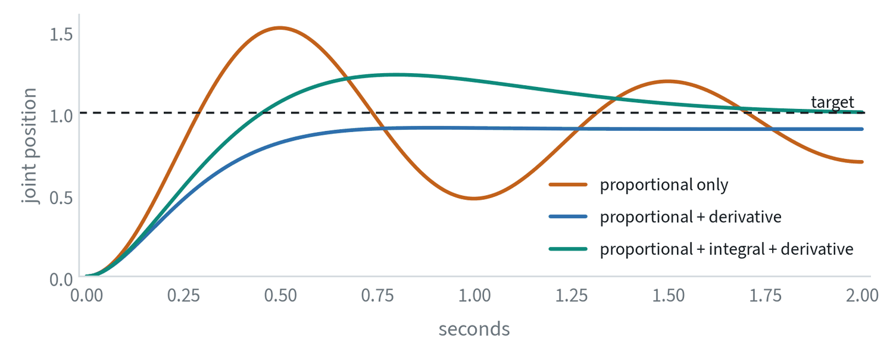
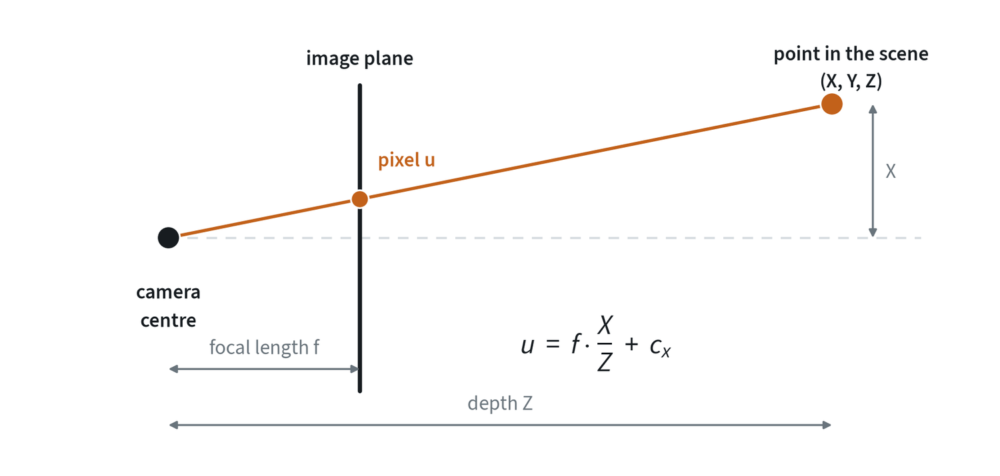

Everything is measured in a frame
A robot never knows “where the cup is”. It knows where the cup is relative to something: the camera, the robot’s base, or the gripper. Each of those is a frame, a point with a set of axes attached. A pose is the position and orientation of one frame as seen from another.


A transform converts a pose from one frame to another, and transforms chain. To reach for the cup, the robot needs the cup in its base frame, which is the base-to-camera transform followed by the camera-to-object transform. An error in either link passes straight through: a camera calibration that is 2 cm off gives a grasp that is 2 cm off.
Three questions catch most frame bugs. Which frame is this number expressed in? What are the units, metres or millimetres, radians or degrees? In which order are the transforms applied? None of these mistakes raises an error. The robot just reaches for the wrong place.
Transforms in symbols
A pose is a rotation and a translation . Packing them into one 4 × 4 matrix turns “apply the rotation, then add the translation” into a single matrix product:
Write for the pose of frame expressed in frame . Transforms chain by multiplication, and the notation checks itself: the inner letters must match and cancel.
This is the chain in the figure above. Hand-eye calibration is the problem of finding the fixed transform , or for a wrist camera, from several views of a known target. It reduces to an equation of the form , where and are measured motions of the robot and of the target and is the unknown.
A rotation matrix has nine entries and three degrees of freedom. It must satisfy and . That redundancy is the root of the representation problems in the next section: a network’s raw output will not satisfy those constraints unless it is projected back onto them.
Kinematics: joints and the hand
Forward kinematics turns joint angles into the pose of the gripper. It is a fixed calculation with one answer. Inverse kinematics goes the other way, from a wanted gripper pose to joint angles, and it is harder: there can be several answers, or none.


This matters as soon as a policy outputs gripper poses. A solver underneath has to pick one of the solutions, and near a singularity, where the arm is stretched out or two joints line up, a small move of the hand needs a very large move of the joints. A policy that outputs joint angles avoids the solver, at the price of being tied to one robot.
The right-hand panel shows a second consequence. Moving the joints evenly does not move the hand in a straight line. If the hand has to stay on a line, for example to slide along a table, the motion has to be planned in the hand’s space.
The Jacobian
Forward kinematics is a function from joint angles to the pose of the hand. Its derivative, the Jacobian , relates small changes, and through them velocities and forces:
The first equation says how fast the hand moves for given joint speeds. The second says what joint torques produce a force at the hand, which is how a robot pushes with a chosen force without a force sensor. For the two-link arm with link lengths :


Inverse kinematics is usually solved by iterating on the Jacobian: , with the pseudo-inverse. The size of the ellipse, , is called manipulability. Where it approaches zero the arm is at a singularity, the pseudo-inverse blows up, and a small requested motion of the hand demands enormous joint speeds. The damped form trades a little accuracy for staying finite. An arm with seven joints has one more than a pose requires, and that spare freedom, the null space of , is used to keep away from singularities and joint limits.
Rotations are not ordinary numbers
Position is three numbers that behave well. Orientation is not. Every compact way to write a rotation has a place where it breaks.


A network asked to output the top curve must reproduce a jump exactly, and averaging two nearly identical poses on either side of it gives a pose that points the opposite way. That is why modern policies avoid single angles.
| Representation | Numbers | Its problem | Where you will see it |
|---|---|---|---|
| Euler angles | 3 | Depends on the axis order; wraps around; loses a degree of freedom at some poses | Datasets, user interfaces |
| Axis-angle | 3 | Wraps at half a turn | Many robot action formats |
| Quaternion | 4 | Two quaternions describe every rotation; must be kept at unit length | Simulators, robot drivers |
| Rotation matrix | 9 | Redundant; a network’s output is not a valid matrix without clean-up | Maths and libraries |
| 6D (two matrix columns) | 6 | Needs a small step to rebuild the matrix | Network outputs |
Two habits follow. Find out which representation a dataset uses before training on it. And never add rotations: a relative rotation is applied by multiplying, not by adding angles.
From an action to motor torque
A learned policy produces targets 10 to 50 times a second. A classical controller runs underneath at 500 to 1,000 times a second and turns each target into motor torques. The controller’s settings decide what an action physically does.


- Position control. Go to this position and resist anything in the way. It is precise in free space and harsh in contact.
- Impedance control. Behave like a spring and damper around the target. The stiffness sets how much force each millimetre of error produces, so contact is gentle and position is less exact.
- Torque control. Command the motor torques directly. It gives the most freedom and needs a fast loop and a good model of the robot.
The lesson for learning is that an action is only meaningful together with the controller that executed it. Demonstrations recorded with a compliant controller will not replay correctly through a stiff one. The commanded position and the position actually reached also differ, and a dataset may store either.
Controllers in symbols
The lowest loop turns a position error into a motor command. The classic law has three terms:


A better controller does not wait for an error to appear. The arm’s dynamics are known:
with the inertia, the velocity-dependent terms and gravity. Computing and adding it to the command, gravity compensation, removes the load that the integral term was fighting, and it is why a torque-controlled arm can be moved by hand and stays where it is left.
Impedance control specifies the relationship between motion and force directly. The controller makes the hand behave as a spring and damper around its target:
is stiffness in newtons per metre. With a 2 cm error produces 8 N; with it produces 80 N. That single number decides whether a contact is gentle, which is the comparison in the figure above.
Cameras and calibration


Intrinsics describe the camera itself: focal length, image centre and lens distortion. They convert a pixel into a ray. Extrinsics are the camera’s pose relative to the robot. Finding them is called hand-eye calibration. With both, and a depth value, a pixel becomes a point the robot can reach for.
End-to-end policies do not use calibration explicitly. They learn the mapping from pixels to motion from data. That hides the dependency without removing it. A policy trained with the camera in one place has absorbed that placement, and a camera bumped by a few centimetres is a quiet cause of a drop in success.
Time is part of the state
Every sensor and motor has a delay. A camera frame is tens of milliseconds old when it arrives, and a command takes time to become motion. Two rules keep this under control.
- Timestamp everything at the source. Then align streams by time, not by the order they arrived in.
- Keep the training and deployment timing the same. If images lagged the joint readings by 100 ms in the data and by 20 ms on the robot, the policy sees a relationship it was never trained on.
The note on deployment covers what to do about the delay that remains.
Common mistakes
- Mixing frames or units. A pose in the camera frame fed to a function that expects the base frame gives no error and a wrong reach.
- Adding rotations. Angles do not add. Compose rotations by multiplication.
- Assuming the command was reached. Check whether the dataset stores commanded or measured positions.
- Moving the camera. Treat camera placement as part of the model, and check it before blaming the policy.
Terms
- Frame
- A point with axes attached, in which positions and orientations are expressed.
- Pose
- The position and orientation of one frame relative to another.
- Forward kinematics
- Computing the gripper pose from the joint angles.
- Inverse kinematics
- Finding joint angles that give a wanted gripper pose.
- Singularity
- An arm configuration where some hand motions need very large joint motions.
- Impedance control
- A controller that makes the robot act like a spring and damper around its target.
- Intrinsics and extrinsics
- A camera’s internal geometry, and its pose relative to the robot.
- Homogeneous transform
- A 4 × 4 matrix that holds a rotation and a translation, so that poses compose by multiplication.
- Jacobian
- The matrix relating joint velocities to hand velocity, and hand forces to joint torques.
- Manipulability
- A measure of how freely the hand can move in every direction at a given configuration.
- Gravity compensation
- Adding the torque needed to hold the arm’s own weight to every command.